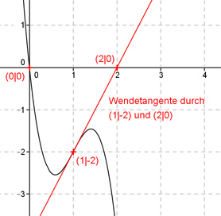

Aufgabe 25 Der Graph einer ganzrationalen Funktion 3. Grades geht durch den Nullpunkt, hat einen Wendepunkt bei (1|-2), und die Wendetangente schneidet die x-Achse in (2|0). Wie lautet seine Funktionsgleichung?  Allgemeine Form einer ganzrationalen Funktion 3. Grades: f(x) = ax3 + bx2 + cx + d f’(x) = 3ax2 + 2bx + c f’’(x) = 6ax + 2b 4 Bedingungen: 1. Geht durch den Nullpunkt bedeutet: f(0) = 0 --> a * 03 + b * 02 + c * 0 + d = 0 --> d = 0 2. Hat einen Wendepunkt bei (1|-2) bedeutet zum einen: (d = 0 eingesetzt): f(1) = -2 --> a * 13 + b * 12 + c * 1 = -2 --> a + b + c = -2 I 3. Hat einen Wendepunkt bei (1|-2) bedeutet zum anderen: f’’(1) = 0 --> 6a * 12 + 2b = 0 --> 6a + 2b = 0 II 4. Die Wendetangente schneidet die x-Achse in (2|0) bedeutet: Steigung der Wendetangente = Steigung einer Geraden: Sie geht durch die Punkte: (1|-2) und (2|0) x1 y1 x2 y2 y2 - y1 0 - (-2) 2 m = --------- = ---------- = --- = 2 x2 - x1 2 - 1 1 Steigung der Wendetangente = erste Ableitung im Wendepunkt f’(1) = 2 --> 3a * 12 + 2b * 1 + c = 2 --> 3a + 2b + c = 2 III I * (-1) + III -a - b - c = 2 3a + 2b + c = 2 ---------------- 2a + b = 4 IV IV * (-3) + II -6a - 3b = -12 6a + 2b = 0 -------------- -b = -12 |:(-1) b = 12 b = 12 in IV eingesetzt. 2a + 12 = 4 |-12 2a = -8 |:2 a = -4 a = -4 und b = 12 in I eingesetzt. -4 + 12 + c = -2 8 + c = -2 |-8 c = -10 Gesuchte Funktionsgleichung: f(x) = -4x3 + 12x2 - 10x